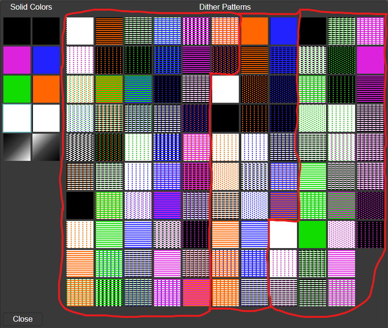

HGR Tool Manual
HGR Tool is a web-based paint program for Apple II hi-res images. It runs entirely in your web browser, with no server-side components.
The editor should be familiar to anyone who has used a paint program for the Apple II (or any other system). A large central window holds the image being edited, while various commands and tools can be accessed by clicking icons on the top and sides. Some information and additional controls are at the bottom. The right side of the screen has thumbnail views of all open images.
Apple II Hi-Res Notes
If you're already familiar with the structure of the Apple II hi-res graphics screen, you can skip this section.
The hi-res screen has an unusual, and probably unique, way of representing colors. Each pixel on the screen is associated with a single bit, but the color of that pixel depends on the bits that come before it and after it. A bit set in an even column can be blue or violet, while a bit set in an odd column can be orange or green. If two adjacent bits are set, both will be white.
Seven out of the eight bits in each byte map to screen pixels. The eighth bit, when set, causes the lit pixels to shift half a pixel to the right, which changes violet to blue and green to orange. This means you can have blue and orange pixels in the same byte, but you can't have blue and green. Sometimes this can cause "bleeding" effects, e.g. when a purple line is drawn diagonally through an orange square, columns of adjacent orange pixels will turn green.
This arrangement means that there are effectively two versions of black and two versions of white. In summary:
| State | MSB 0 | MSB 1 |
|---|---|---|
| bits clear | black0 | black1 |
| odd bits set | green | orange |
| even bits set | violet | blue |
| bits set | white0 | white1 |
Hi-res pixels are not quite square.
File Access
To prevent malware from accessing your system, web browsers don't allow free access to your local filesystem. Recent browsers provide a system that will let you save changes to a file that you previously opened. Older browsers, and some newer browsers that don't have the latest features, rely on a more awkward mechanism.
A quick way open images is to drag them into the editor, either into the central edit window or onto the thumbnail bar on the right side of the screen.
- New: creates a new hi-res image, cleared to black0.
- Open: allows you to select one or more files to open. Files that don't appear to be hi-res images are ignored.
- Save: saves the current image to the file it came from. If that isn't possible, this will function like Save As.
- Save As: saves the current image to a file you specify.
- Close: closes the current image.
Editor Window
The center window shows the image being edited. This is an approximation of the appearance on the high-res screen. It can be zoomed in and out using the mouse wheel; at higher zoom levels, a grid is overlayed to highlight the position of individual pixel cells.
The HGR Tool editor does not show the half-pixel shift, because it makes it harder to identify which pixel you're changing while zoomed in. Pixels are displayed as squares, which isn't quite accurate.
Thumbnails
All loaded images are shown in thumbnails on the right side of the screen. Clicking on a thumbnail switches to that image. When edits are made, the thumbnail will have a red triangle superimposed.
The number of images that can be loaded simultaneously is limited.
Tools
The tool selection determines what happens when you right-click in the edit window.
Regardless of the tool setting, when the mouse cursor is in the edit window, the mouse wheel will change the zoom level, and dragging with the right mouse button pressed will pan the image.
- Pan: click & drag to pan the image. This does nothing if the image fits entirely in the window. It's most useful when zoomed in.
- Select: selects a rectangular area. This can be used with Cut / Copy / Paste.
- Scribble: click to plot a pixel with the current color pattern. Click and drag to plot continuously.
- Line: draws a line. Click to set the start point, then drag and release to set the end point. The line style can be configured.
- Rect Frame: draws a rectangular frame. Click to set the first corner, then drag and release to set the second. The line style can be configured.
- Rect: draws a filled rectangle. Click to set the first corner, then drag and release to set the second.
- Ellipse Frame: draws an ellipse that fills a rectangle. Click to set the first corner, then drag and release to set the second. The line style can be configured.
- Ellipse: draws a filled ellipse that fills a rectangle. Click to set the first corner, then drag and release to set the second.
- Text: draws a text string. Click to set the top-left corner, then enter the text in the dialog that appears. The text will be rendered into a clipping, using the current font. The clipping works the same as a copied selection. When it's in the desired position, hit Enter or use Paste.
- Fill: flood-fills the screen at the cursor position. See notes below.
The flood fill algorithm reads the current color from the clicked position, and attempts to replace pixels that have the same color with the current color pattern. It looks at adjacent pixels in the four cardinal directions (N/S/E/W) and spreads, stopping when it encounters a pixel with a different color. This only works with pure colors, not arbitrary dither patterns, and treats the two varieties of black and white as equivalent.
If the screen is being displayed in monochrome mode, the fill will treat the screen appropriately. Because colors are represented as alternating vertical lines, this can cause colored regions to be filled in with white.
Clippings
After selecting a rectangular region with the Select tool, you can create a clipping with the Cut or Copy button. After you do this, the border will animate, and you will be able to move the clipping around the screen by left-clicking and dragging, or with the arrow keys. You can also create a clipping by creating a text string with the Text tool.
If you click the Paste button, the clipping will be pasted on the screen at its current position. You can reposition the clipping and paste it multiple times. Pressing the Enter key while a clipping is active will paste it and then clear the clipping.
If you switch to a different image, the clipping will still be on screen. This can be used to copy portions of one image to another.
The clipping can be cleared by hitting Escape or by selecting a different drawing tool.
Info & Adjustments
A display at the bottom of the screen shows the current cursor position, and, when creating something rectangular, the position and size of the rectangle.
The Monochrome checkbox controls whether the image is displayed in color or black & white.
The Scale slider alters the magnification. This can also be done with the mouse scroll wheel.
The scaled-down image at the bottom is the panner view. When you zoom in, it lets you see where you are in the image. Clicking and dragging in the panner window will move the position.
The current color pattern is shown here as well. Click on the pattern to open the color chooser.
Configuration
Below the tools are the configuration buttons.
- Choose Color: opens the color pattern chooser. See notes below.
- Choose Font: opens the font chooser. You can select the default bitmap font, or a font supported by your web browser. Browser fonts tend to look bad at smaller point sizes.
- Line Width: opens the style chooser. This allows you to select the line width used for various tools. The default, "Thick", always sets two adjacent pixels. "Thin" sets a single pixel, and "Applesoft Thin" draws lines [almost] the same way Applesoft BASIC does.
- Settings: configure palette selection behavior and the way clipping Paste operations work. Settings are stored in your browser's local storage, so they will persist across invocations.
- About: some information about the program.
The color palette is divided into four sections:
On the left side are the eight solid colors. Below them are two special "transparent" colors, shown as diagonal gradients, that only affect the MSB when drawn. For example, you can change an orange & blue design to green & purple by selecting the "MSB off" pattern on the bottom left and drawing over that part of the image with the Rect tool.
The dithered palette comes from The Graphics Magician, published for the Apple II by Penguin Software. The first 52 colors use blended colors, where alternating rows have different values for the MSB. The next 25 have the MSB set, and the last 31 have the MSB clear. To make it easier to identify the breaks between sections, the first color in each section is white.
To avoid horizontal color bleeding effects, use colors from a single section in a given vertical region.
The color chooser does model the half-pixel shift for the color swatches, which is why the white square in the top-left corner has a ragged left edge. This is closer to how the pattern will appear on an Apple II or emulator than what the editor shows.
Miscellaneous
The Undo and Redo buttons will undo and redo any action that modifies the image. The number of undoable operations is not limited by anything but your computer's memory.